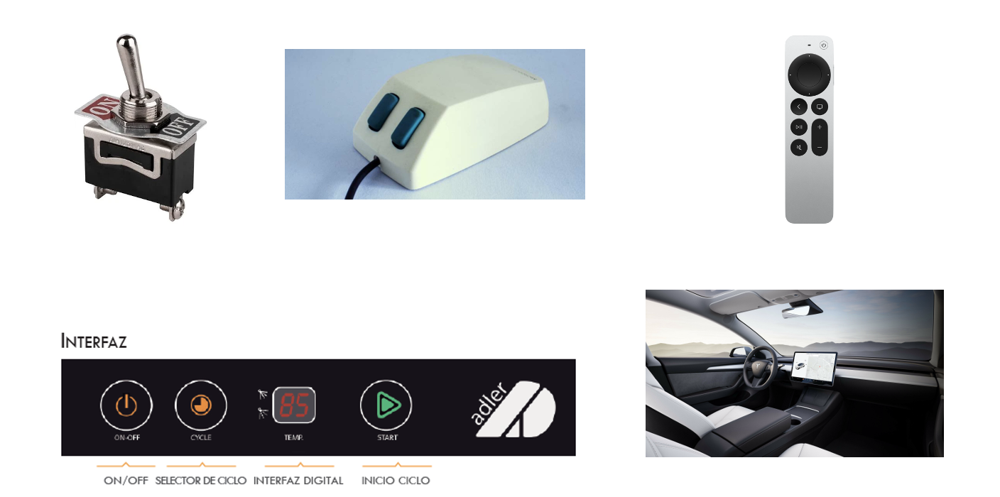

U1 - Herramientas para diseño de interfaces web
Debate inicial
- ¿Qué es una interfaz de usuario?
- ¿Dónde podemos encontrar interfaces de usuario?
- ¿En quién tenemos que pensar cuando creamos una interfaz de usuario?
- ¿Qué herramientas conoces para el diseño y programación de interfaces?
- ¿Qué lenguajes conoces para definir interfaces de usuario?
- ¿Qué es UI - UX?

1. Interfaz de usuario (UI)
- Es el punto de interacción y comunicación humano-computadora en un dispositivo.
- Esto puede incluir pantallas de visualización, teclados, un mouse y la apariencia de un escritorio.
- No está limitado a aplicaciones informáticas. Una lavadora, un automóvil o un mando a distancia también son interfaces de usuario.
Fuente: Computer Weekly
Ejemplos de interfaz de usuario
- mouse de computadora
- control remoto
- realidad virtual
- cajeros automáticos (ATM)
- velocímetro
- pantalla táctil
- lavavajillas
- automóvil

1.1 Tipos de interfaz de usuario
Tipos de interfaz según la forma de interactuar del usuario
- CLI (Command-Line Interface): interfaz de línea de commandos. Sólo representan texto. El teclado es el periférico preferido.
- GUI (Graphic User Interface): Permiten comunicarse con la computadora de forma rápida e intuitiva representando gráficamente los elementos de control y medida. El ratón (y el teclado) es el dispositivo periférico preferido.
- NUI (Natural User Interface): Pueden ser táctiles, representando gráficamente un «panel de control» o mediante reconocimiento del habla.

Fuente: Wikipedia
2. Experiencia de usuario (UX)
“La función de los profesionales de la experiencia de usuario no es otra que hacer esta tecnología amigable, satisfactoria, fácil de usar y, por tanto, realmente útil”
Experiencia de usuario: Principios y métodos, Yusef Hassan Montero
UX (User Experience)
- UX es la manera en que el usuario percibe, siente o interactúa con un sistema o un servicio. Se trata de la sensación del usuario cuando está en contacto e interactúa con una web, una app o un sistema
- UX es un grupo de disciplinas: interacción, arquitectura de la información, animación en diseño, estilo de comunicación
- UX es un proceso. No se trata de algo estático; un buen desarrollo de UX involucra una serie de fases para garantizar la calidad de un producto
Fuente: Strike Heredia - Domestika
2.1 Conceptos fundamentales
-
Usabilidad: es un atributo de calidad de un producto que se refiere sencillamente a su facilidad de uso.
-
Accesibilidad: que se refiere a la posibilidad de que pueda ser usado sin problemas por el mayor número de personas posibles, independientemente de las limitaciones propias del individuo o de las derivadas del contexto de uso.
-
Arquitectura de información: “El arte, la ciencia y la práctica de diseñar espacios interactivos comprensibles, que ofrezcan una experiencia de uso satisfactoria facilitando el encuentro entre las necesidades de los usuarios y los contenidos y/o funcionalidades del producto”

Fuente: Experiencia de usuario: Principios y métodos, Yusef Hassan Montero
2.2 Diseño centrado en el usuario
El Diseño Centrado en el Usuario o DCU (UCD, User-Centered Design) hace referencia a una visión o filosofía del diseño en la que el proceso está conducido por información acerca de la audiencia objetiva del producto.
La principal diferencia del DCU frente a otros enfoques es que su proceso no es secuencial o lineal, sino que presenta ciclos en los que iterativamente se prueba el diseño y se optimiza hasta alcanzar el nivel de calidad requerido.

Fuente: Experiencia de usuario: Principios y métodos, Yusef Hassan Montero
Metodología Agile

- El manifiesto Agile: agilealliance.org
- SCRUM: Wikipedia.org
2.3 Principios del diseño
- Clasificación
- Color
- Eficiencia
- Error humano
- Estética
- Fotografías
- Iconos
- Inteligencia colectiva
- Jerarquía visual
- Legibilidad e inteligibilidad
- Ley de Fitts
- Mapeo Natural
- Ordenación
- Relevancia
- Taxonomías
- Toma de decisions
- Visibilidad y retroalimentación
Para más información consultar: Experiencia de usuario: Principios y métodos, Yusef Hassan Montero
2.4 Métodos para el UX
- Analítica Web
- Card Sorting
- Diagramas de interacción
- Diseño modular
- Encuestas y entrevistas
- Evaluación eurística
- Personajes y escenarios.
- Pruebas A/B
- Pruebas con usuarios
- ROI
- Wireframes
Para más información consultar: Experiencia de usuario: Principios y métodos, Yusef Hassan Montero
UI versus UX

3. Sistemas de Diseño
Un sistema de diseño es un conjunto de principios, componentes, guías y herramientas que permiten mantener la coherencia y escalabilidad en el desarrollo de productos digitales (aplicaciones, sitios web, etc.).
Se enfoca tanto en el diseño visual como en la experiencia del usuario y el código.
Su objetivo es facilitar la colaboración entre diseñadores y desarrolladores, al tiempo que garantiza la consistencia en todo el producto.

Fuente: designerup.co
3.1 Componentes Clave
- Principios de diseño: Son las reglas básicas que guían las decisiones de diseño, asegurando que el enfoque sea coherente y alineado con la identidad de la marca.
- Guías de estilo (Style Guide): Describen el uso correcto de tipografías, colores, espaciados, iconografía y otros elementos visuales.
- Componentes reutilizables: Botones, menús, formularios y otros componentes que se usan repetidamente en diferentes partes de la interfaz. Estos están estandarizados para que todos los equipos los utilicen de manera consistente.
- Biblioteca de patrones: Conjunto de patrones de diseño probados para resolver problemas comunes (por ejemplo, navegaciones, barras de búsqueda, etc.).
- Tokens de diseño: Variables de diseño que se utilizan en el código para definir colores, tamaños, tipografía, etc. Pueden ser fácilmente actualizados y aplicados a toda la interfaz.
Fuente: Hiberus.com
3.2 Sistemas de diseño populares
- Material Design (Google): Material Design es el sistema de diseño desarrollado por Google. Es utilizado principalmente para aplicaciones móviles y web en el ecosistema de Google y Android.
- Link: https://material.io/
- Ant Design (Alibaba): Es un sistema de diseño para aplicaciones empresariales, creado por Alibaba. Está basado en React y proporciona una amplia gama de componentes listos para usar.
- Link: https://ant.design/
- Carbon Design System (IBM):El sistema de diseño de IBM para crear productos digitales con consistencia en la experiencia de usuario.
- Atlassian Design System (creadores de Jira y Confluence) ha creado su propio sistema de diseño para garantizar la coherencia entre sus productos.
- Polaris (Shopify): Creado para ayudar a diseñadores y desarrolladores a crear interfaces coherentes y fáciles de usar para las aplicaciones de Shopify.
- Fluent Design System (Microsoft): Es el sistema de diseño de Microsoft que se enfoca en proporcionar una experiencia de usuario moderna y coherente a través de Windows y aplicaciones de Microsoft. -Link: https://www.microsoft.com/design/fluent/
Crear variables en Figma